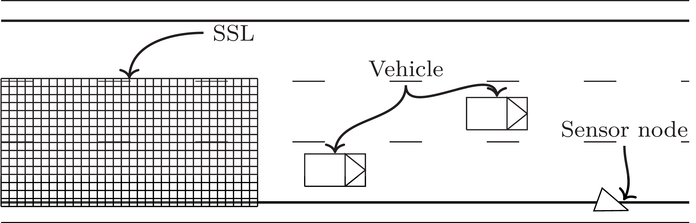
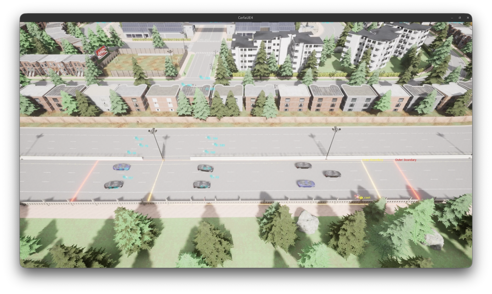
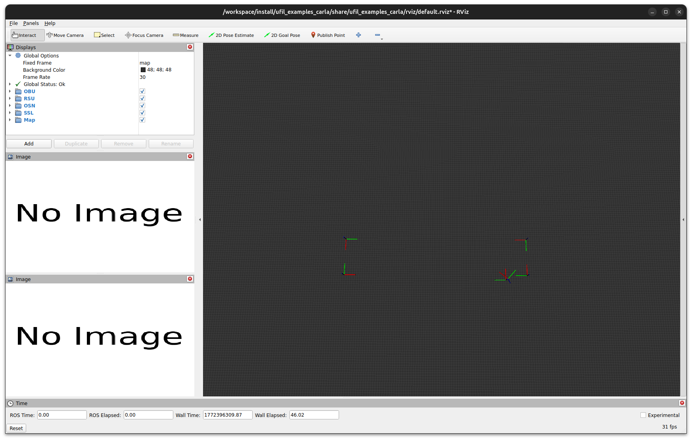
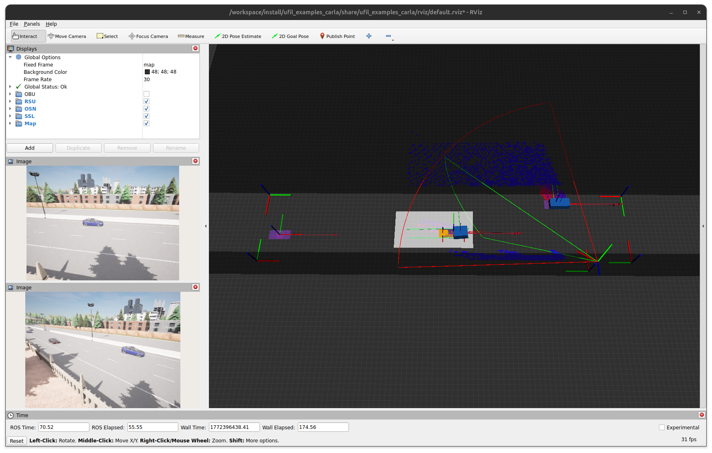

Carla
The Carla example in Ufil demonstrates one of the framework’s advanced use cases in a simulated environment using the CARLA simulator.
It consists of multiple packages and is included in the ufil_examples module.
This scenario illustrates how a complete infrastructure-based localization system, described in the Complex Scenario, can be executed using a high fidelity simulator.
Scenario
The scenario is a highway segment in TOWN 5, where vehicles are equipped with simulated V2I functionality and broadcast CAM messages. A outdoor sensor node is installed roadside, facing the highway, while the sensitive surface layer (SSL) is simulated in the lanes using a co-simulation based on vehicle ground-truth data. Their fields of view partially overlap.
{kind=link}

The setup in the CARLA testbed looks like this:
{kind=link}

Usage
Starting the Example
Launch the full CARLA simulation and Ufil stack with:
ros2 launch ufil_examples carla-highway.launch.xml
The RViz visualization should appear as follows:
{kind=link}

Playing the Dataset
In a second terminal, play back the prerecorded bag file for TOWN 5 to replay all sensor data and trigger the perception pipeline. Using a higher clock frequency improves timestamp accuracy.
ros2 bag play ./260223_highway/ --topics /carla/lidar /ssl/ssl_1/map /ssl/ssl_1/map_update /carla/objects /carla/actor_list /carla/rgb_view_left/image /carla/rgb_view_right/image --clock 300
The visualization will now display the tracking in action and produce output like this:
{kind=link}

Dataset
The dataset used for this example is currently redacted and will be made available after the paper is accepted at the corresponding venue.